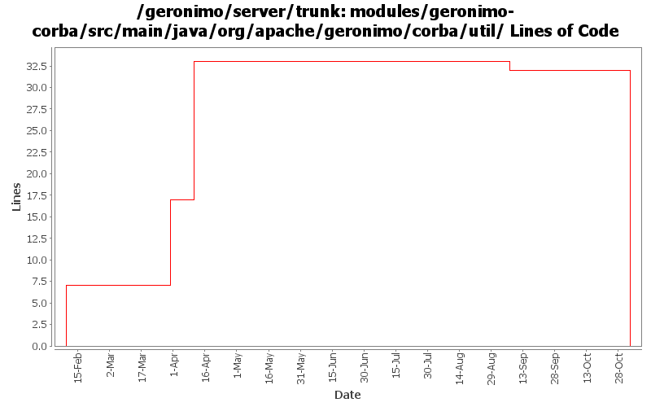

[root]/modules/geronimo-corba/src/main/java/org/apache/geronimo/corba/util

| Author | Changes | Lines of Code | Lines per Change |
|---|---|---|---|
| Totals | 30 (100.0%) | 40 (100.0%) | 1.3 |
| rickmcguire | 5 (16.7%) | 33 (82.5%) | 6.6 |
| dain | 10 (33.3%) | 7 (17.5%) | 0.7 |
| prasad | 12 (40.0%) | 0 (0.0%) | 0.0 |
| dblevins | 3 (10.0%) | 0 (0.0%) | 0.0 |
GERONIMO-3565. Modules distributed amongst framework/modules and plugins
0 lines of code changed in 12 files:
Fix for GERONIMO-3459. Moved copies of ObjectInputStreamExt and ClassLoading into geronimo-corba -- the openejb copies have been deleted. Note these classes exist somewhere in the geronimo tree as well and could potentially be reused from there, though that might require adding some dependencies.
0 lines of code changed in 3 files:
GERONIMO-3246 Cleanup exception handling so stack traces for first failures are not discarded.
7 lines of code changed in 3 files:
Fix client ORB configuration problems that would not allow tssconfig information to be specified on the client ORB. Also propagate the TSSCONFIG information to IORs for objects published on the rootPOA.
16 lines of code changed in 1 file:
GERONIMO-3047 EJB .create() calls causing marshalling exceptions when invoked through CORBA.
10 lines of code changed in 1 file:
Ported CORBA implementation from OpenEJB 2
7 lines of code changed in 10 files: